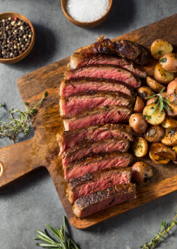

New York Strip Steak

This is a delicious steak that is easy to make and tastes great. I prefer eating New York Strips because it's leaner than other cuts. It is a great meal for a special occasion or just a nice dinner. We generally want to cut our strips here ranging from at least 1 inch to 1.5 inches at most. This will give you a nice medium rare steak. If you want it more well done, you can cut it thinner.
Ingredients
- 12 oz New York Strip Cut
- Seasoning Of Choice (like garlic salt)
- 1 Sprig of Thyme
- 1 Garlic Clove
- 1 tbsp Extra Virgin Olive Oil
- 1 tbsp Beef Tallow
Steps
- Take the 12 oz steak out of the fridge and let it sit at room temperature for 30 minutes.
- Preheat your grill or skillet to medium-high heat.
- Season the steak with your seasoning of choice on both sides.
- Add the olive oil to the skillet or pan.
- Once the oil is hot, add the steak to the skillet or grill.
- Cook for 3-5 minutes on one side, then flip and add in your 1 tbsp of beef tallow.
- Cook the flipped side for 3-5 minutes, ideally stopping after your internal temperature hits 10 degrees below your preferred temperature.
- Add the thyme and garlic clove to the skillet or pan during the last minute of cooking.
- Use a spoon to baste the steak with the melted beef tallow and juices from the pan.
- Check the internal temperature of the steak with a meat thermometer.
- Remove the steak from the heat and let it rest for 5-10 minutes before slicing.
- Slice against the grain and serve with your favorite sides.